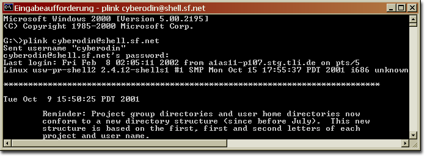
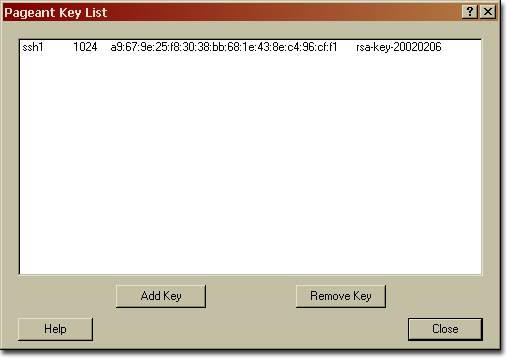

| Main |
| Welcome! |
| Download |
| Mailing Lists |
| Source Code |
| The Team |
| Status |
| Users |
| Quickstart |
| Hello World! |
| CMP Example |
| CMP Guide |
| Deploy |
| Startup |
| Validation |
| Configuration |
| Properties |
| Servers |
| Local Server |
| Remote Server |
| Tomcat |
| Geronimo |
| Integrators |
| Why OpenEJB |
| Overview |
| Design |
| Presentation |
Working CVS and SSH under Windows |
Abstract
Installing the PuTTY program
Configuring WinCVS to work with SSH (PuTTY)
Abstract
Installing the PuTTY program
PuTTY is a fully featured SSH client for Windows operation systems. PuTTY is available from the PuTTY web site.
Note: You need a couple of binaries, the PuTTY program itself
is not enough.

PuTTY.exe - The SSH client PSCP.exe - A secure copy program PLINK.exe - a command-line interface to the PuTTY back ends PAGEANT.exe - an SSH authentication agent for PuTTY, PSCP and Plink
Including your PuTTY binaries in your default PATH
You have to include the PuTTY binaries mentioned above in
your system's default PATH. To do so add the path to your
PuTTY binaries like the ollowing the your system's PATH
environment variable.
set PATH=C:\PROGRAM FILES\PUTTY;%PATH%
Note: This is just an example!
To test your PuTTY installation, you can try to type the following
command at the command prompt of a dos box.
plink [developername]@shell.sourceforge.net
Change [developername] to your SF developer name. If the command
succeeds you should be able to login to the SF system.

Figure 1: Accessing the SF server without having a public key installed on it.
How to generate your public/private RSA key
SSH works with a private/public asymetric key scheme like it does PGP or other asymetric krypto systems. This fact requires that you generate a public/private key pair to use WinCVS with SSH (PuTTY).
Generating these keys using the PuTTY key generator (PUTTYGEN.exe) is pretty easy. Just press 'generate' and move your mouse over the blank area until the key gets generated.
After the procedure has finished you have to save the private/public key pair in a _SECURE_ place on your system by using the 'save public/private' buttons.
Usually the private key is named ...
identity
and the public key is named ...
identity.pub

Figure 2: The PuTTYgen program to generate a public/private key pair.
A word from the wise (security note)
The private key should _NEVER_ leave your system! Keep it as private as possible!
How to install the public key on the SF system
Installing your public key manually
The following section is just to demonstrate how the SSH public/private key system works. To get the public key installed on the SF OpenEJB CVS server you have to use SF's web based form for submiting public RSA keys.
If you want to install your public key manually on one of the SF
servers, you have to perform a few steps.
copy your key onto the SF server using secure copy logon the SF server using plink creating a .ssh directory.
moving your public key in this newly created directory
The two figures below illustrate the processes described above.

Figure 3: The PuTTYgen secure copy program to copy files in a secure manner.

Figure 4: A few steps to a fully working SSH enabled SF account.
Installing your public key using the SF upload form
The SF upload form for public RSA/DSA keys can be found at your account options page of your SF personal page.
If you are using the SF web based form, your public key gets distributed
within six hours to the following systems.
The OpenEJB home server (www.openejb.org) The SF shell server (shell.sf.net) The OpenEJB CVS server at Codehaus (cvs.openejb.codehaus.org)

Figure 5: Here we go - The already mentioned SF upload page for public keys.
How to start and configure the PuTTY SSH agent
The PuTTY SSH agent manages all your private RSA/DSA keys.
Launching the PuTTY SSH agent is very easy - just execute the program 'PAGEANT.exe'. After starting the agent a new icon should reside in your system tray.
How to add a private key to the PuTTY SSH agent
By openeing the PuTTY SSH agent you are able to add your private RSA/DSA key. Be carefull you have to use your private key (identity)!
From now on the PuTTY SSH agent will log you in to any remote system which has your public key installed on it. No need to type passwords any more.

Figure 6: The PuTTY SSH agent with a allready installed private key.

Figure 7: The PuTTY SSH agent is allways accessable due to this system tray icon.
Testing your private/public keys

Figure 8: Using Plink without the need of providing a password.
A word from the wise (security note)
Never leave your computer alone while running the PuTTY SSH agent! With the use of this agent, everybody might login to the SF servers without even having to know your password.
Configuring WinCVS to work with SSH (PuTTY)
There are just a few steps left until you will have a fully working CVS/SSH couple ;-)
Making changes to the CVSROOT variable
If you want to use WinCVS in conjunction with SSH you have to use the SSH authentication method (aka :ext) The figure below shows my basic WinCVS settings.

Figure 9: These are the basic settings wich have to be set inside WinCVS.
Additional but important WinCVS options
Finally you have to provide the SSH binary which should be used by WinCVS. In our case this is PLINK.exe.

Figure 10: Providing the SSH binary to WinCVS.
From now on you should be able to work with CVS using SSH as you did earlier without SSH.